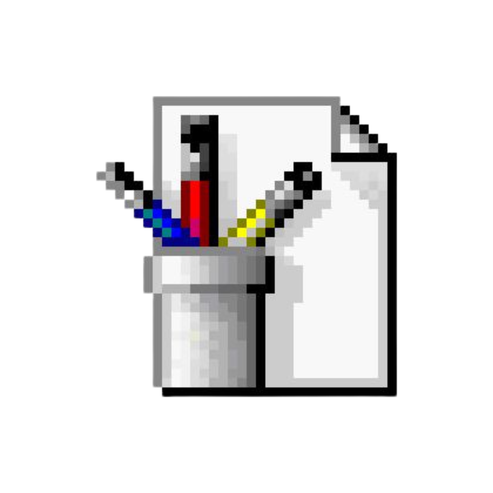

Teachable Machine

Nature of Code
Large Language Model
Graphic AI Novel
General Reflection
Nicole Sophie Belger
Matrikel-Nr.: 79371
B.A. Visuelle Kommunikation
Dies ist eine Dokumentation für das 2. Semester des Grundkurses der Visuellen Kommunikation "Digitale Kommunikation" bei Fabian Morón Zirfas an der HBK Braunschweig.
© SoSe25/Grundlagen der digitalen Kommunikation. Alle Rechte vorbehalten.
Start